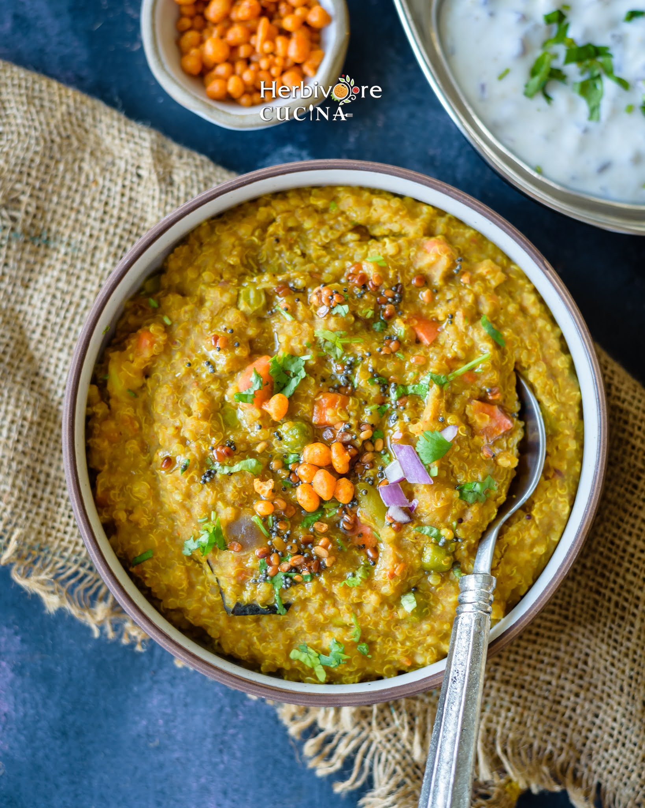
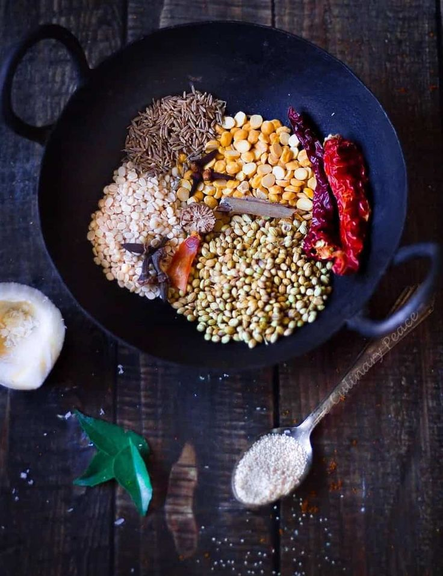

Ingredients
- 1 cup rice
- ½ cup toor dal (pigeon peas)
- 2 cups mixed vegetables (carrots, peas, beans, etc.)
- 1 onion, chopped
- 2 tomatoes, chopped
- 2-3 green chilies, slit
- 1 tablespoon ginger-garlic paste
- 3 tablespoons Bisi Bele Bath powder
- 1 teaspoon mustard seeds
- 1 teaspoon cumin seeds
- 2 tablespoons ghee or oil
- Salt to taste
- Fresh coriander leaves for garnish
Instructions
- Wash the rice and toor dal. Pressure cook them together with the mixed vegetables, adding enough water for about 3 whistles.
- In a large pan, heat ghee or oil. Add mustard seeds and cumin seeds; let them splutter.
- Add chopped onions and green chilies; sauté until the onions are translucent.
- Add ginger-garlic paste and chopped tomatoes; cook until the tomatoes are soft.
- Stir in the Bisi Bele Bath powder and salt, cooking for a couple of minutes.
- Add the cooked rice and dal mixture to the pan; mix well. Adjust the consistency by adding water if needed.
- Simmer for 5-10 minutes, stirring occasionally.
- Garnish with fresh coriander leaves and serve hot with raita or papad.